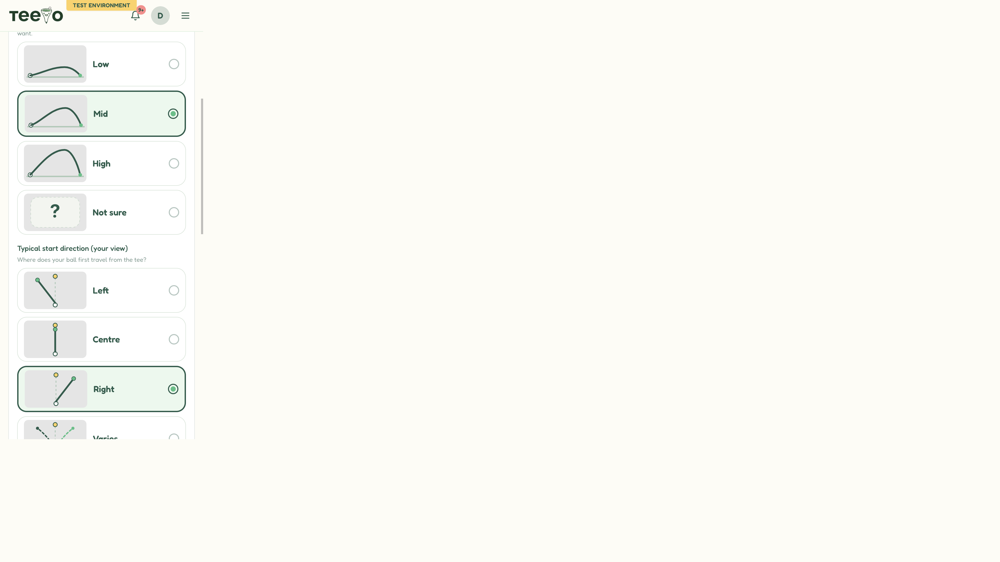
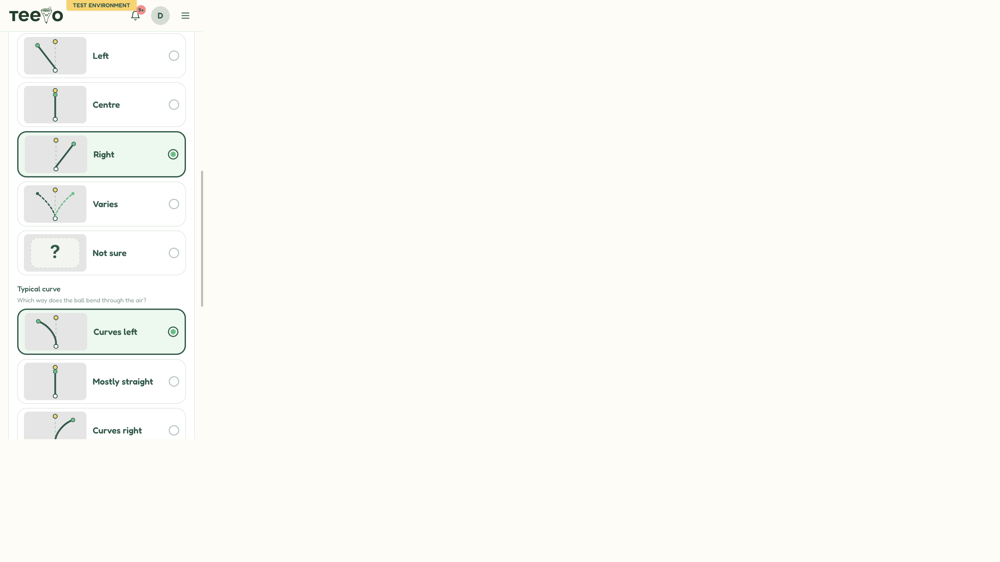
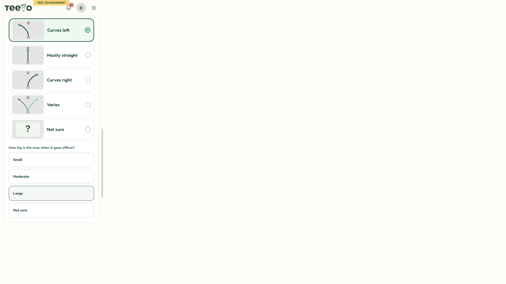
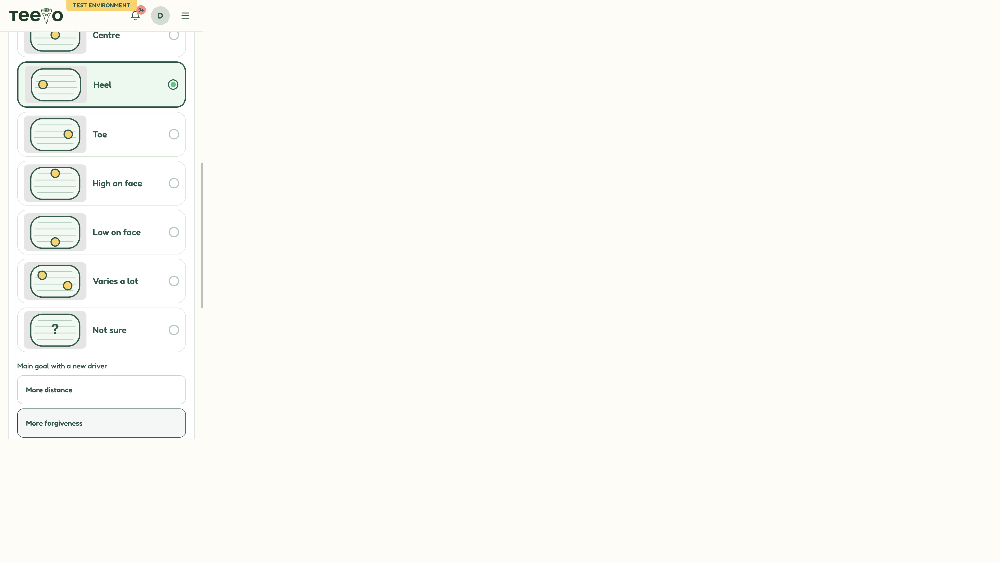

Rendered admin questionnaire cards. Each group includes a selected card (green border and filled radio) and the unselected alternatives. Strike is the right-handed orientation: heel on the left of the face, toe on the right.

Trajectory. Mid selected. Low, High, and Not sure unselected.

Ball start. Right selected. Left, Centre, Varies, and Not sure unselected.

Ball curve. Curves left selected. Mostly straight, Curves right, Varies, and Not sure unselected.

Strike face. Heel selected. Centre, Toe, High on face, Low on face, Varies a lot, and Not sure unselected.